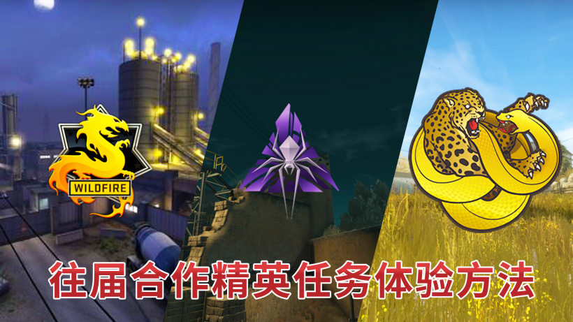
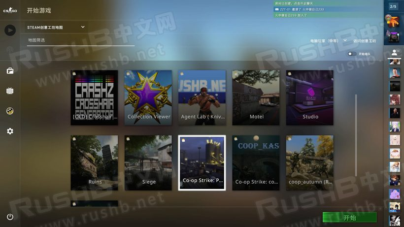
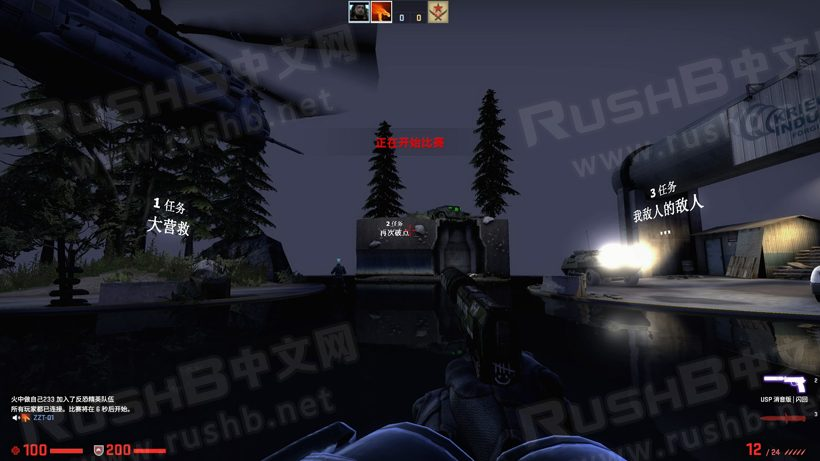
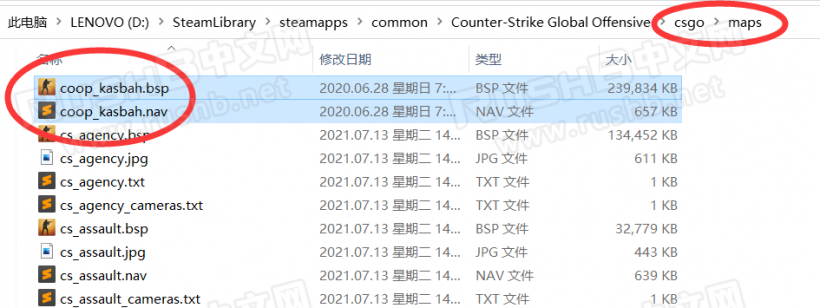
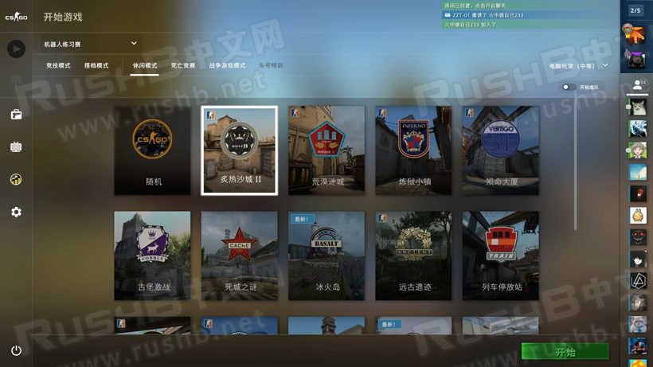
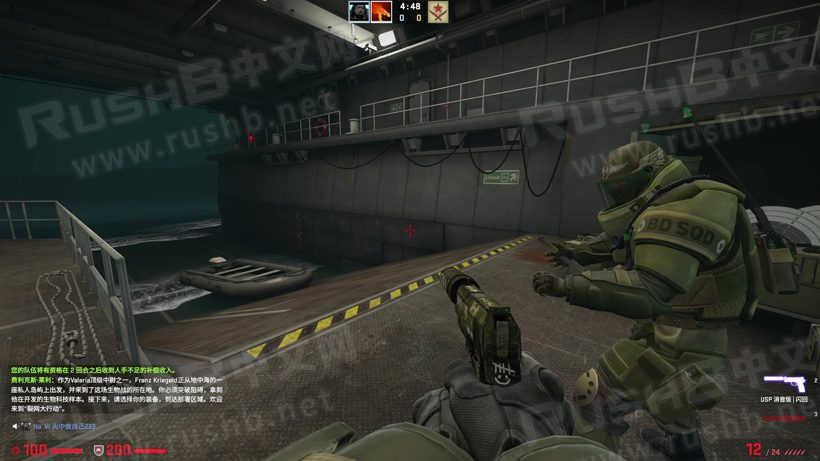
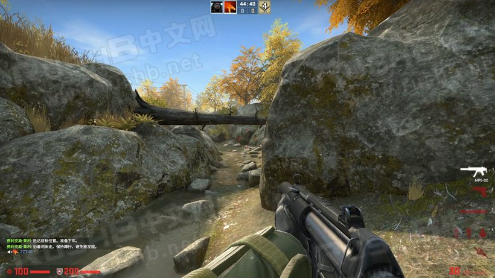

CSGO RushB中文网
CSGO RushB中文网
激流大行动16周任务已经全部公开，如你所见并没有合作精英任务。既然这次没有，不如来体验下V社官方以前推出的合作任务。
*合作精英模式：也被玩家称为合作剧情，与一名好友在大地图上体验剧情并一路击杀敌人，完成目标。

V社推出的合作任务一共有3个：
首先是16年野火大行动：凤凰工业基地，包含3个任务，分别是大营救、再次破点和我敌人的敌人…三个任务都集成在一张地图里。
第二个是裂网大行动：凤凰战士设施，包含2个任务：病.毒爆发和时间紧迫。两个任务都集成在一张地图里。
第三个是狂牙大行动：秋收农场&兴风作浪，和之前不同，两个任务在不同地图上。
下面是合作剧情任务体验教程，首先，需要一名好友，官方合作任务都是需要2个玩家才能进行。 由于是本地建服，需要电脑配置好的玩家做服务器，否者游戏过程容易卡顿。
在开始游戏前，双方请先订阅下载地图。
订阅下载地图
野火大行动：凤凰工业基地
https://steamcommunity.com/sharedfiles/filedetails/?id=1295494370
裂网大行动：凤凰战士设施
由于创意工坊地图不完整，这里是我以前备份文件
链接：https://pan.baidu.com/s/1bmVfRlH4PB_D4iMW7LgHXA?pwd=sf65
提取码：sf65
狂牙大行动
秋收农场：https://steamcommunity.com/sharedfiles/filedetails/?id=2477564968
兴风作浪：https://steamcommunity.com/sharedfiles/filedetails/?id=2477568092
进图方法
野火大行动：凤凰工业基地
野火大行动-凤凰工业基地合作任务可直接通过创意工坊进入，房主邀请好友，如图：

两人进入地图后，选择要开始的任务区域，站在一起即可开始任务。

裂网大行动：凤凰战士设施
由于直接用的地图文件，两人需要先下载压缩包，然后解压至\Counter-Strike Global Offensive\csgo\maps文件夹里。

解压完成后，打开游戏，在机器人练习赛模式下进入任意地图，如图：

双方进入地图后，房主控制台输入：
map coop_kasbah;game_mode 1; game_type 4;
便可进入裂网大行动任务一病.毒爆发。

如果要进入任务二时间紧迫，由于本地图没有任务选择功能，需要房主使用控制台进入：
mp_coopmission_mission_number 2;mp_restartgame 1;
然后游戏重开，便是任务2的，区别在任务导播语音和左下角文字。
狂牙大行动
剩下狂牙大行动两个任务，分别在两个地图，和野火大行动一样直接在创意工坊界面邀请好友即可。
